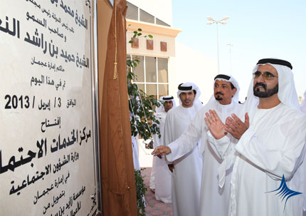
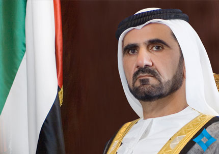

My Vision - Challenges in the Race for Excellence
Home | About the Book | Photo Gallery
Sheikh Mohammed inaugurates social services centres in Ajman, UAQ
UAE Vice President, Prime Minister and Ruler of Dubai His Highness Sheikh Mohammed bin Rashid Al Maktoum inaugurated the Ministry of Social Affairs' Social Services Centre in Ajman on April 3rd 2014.Sheikh Mohammed unveiled a plaque commemorating the opening of the centre which was funded by the Zayed bin Sultan Al Nahyan Charitable and Humanitarian Foundation with a total cost of AED25 million.

Sheikh Mohammed renames "Dubai Bypass" as "Emirates Road"
UAE Vice President, Prime Minister and Ruler of Dubai His Highness Sheikh Mohammed bin Rashid Al Maktoum has ordered that the "Dubai Bypass Road" be renamed "Emirates Road" to highlight the importance of this vital traffic hub which is effectively connecting the Emirates and facilitating smooth flow of vehicular traffic and goods between Dubai and the neighbouring emirates. "Emirates Road" is one of the most important strategic pivots within the road network of the country especially now that the emirate's construction boom is picking up.